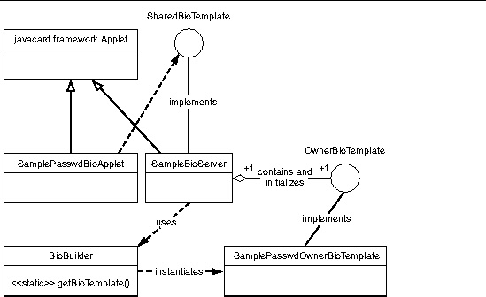

| Development Kit User's Guide, Java Card Platform, Version 2.2.2 |
| Development Kit User's Guide, Java Card Platform, Version 2.2.2 |
| C H A P T E R 3 |
|
Development Kit Samples and Demonstrations |
This release includes several demonstration programs that illustrate the use of the Java Card API, and a scenario of post-manufacture installation.
Version 2.2.2 of the development kit includes the following demonstration programs:
The demo directory is located at $JC_HOME/samples/src/demo on the Solaris or Linux platform and at %JC_HOME%\samples\src\demo on the Microsoft Windows platform. The demo directory contains the directories and files for the development kit demonstrations, which are described in TABLE 3-1 and TABLE 3-2.
|
Note - Many of the directories listed in TABLE 3-1 and TABLE 3-2 contain a _tmp subdirectory. This subdirectory contains intermediate temporary files needed to construct the final *.scr source files. |
|
Contains the files required to run and verify demo2 and demo2crypto:
This directory also contains the subdirectories for the demos that depend on the output of demo2. For more information on the contents of these subdirectories and the demos they represent, see TABLE 3-2. |
|
|
Contains the files required to run Java Card WDE:
|
|
|
Contains the files required to run and verify the logical channels demo: |
|
|
Footer.scr, Header.scr - Scripts to terminate and initialize the session, respectively. |
|
|
Contains the files required to run and verify odDemo1 and odDemo2:
|
|
|
Contains the files to run the transit system demo:
|
|
|
Contains six files demonstrating message recovery:
|
Several of the development kit demonstrations use the output generated by the demo2 demonstration. These demonstrations are stored in subdirectories of demo2. The demo2 directory also contains the files that the demos need to run JavaPurse, JavaLoyalty, and Wallet. The demonstrations and subdirectories contained in demo2 are described in TABLE 3-2.
Except for the transit and Utility APIs Demo Applet demos, all the demo programs in the binary release are prebuilt. If you make any changes to the demos, the following sections describe how you can rebuild them.
Ant script files are provided to build the samples. The Ant scripts are invoked by the shell script $JC_HOME/samples/build_samples on Solaris or Linux platforms or the batch file %JC_HOME%\samples\build_samples.bat on the Microsoft Windows platform. To understand what is going on behind the scenes, it is very instructive to look at these scripts.
By default, the build script in the binary release produces a 32-bit version of cref that supports dual interfaces of T=CL and T=1 protocols.
Following is the command line syntax for the build script:
build_samples options
TABLE 3-3 shows the possible values for options.
The build_samples script uses the environment variable JAVA_HOME. To correctly set this environment variable, refer to Setting Environment Variables for the Solaris or Linux Platform or Setting Environment Variables for Microsoft Windows Platform.
Run the script without parameters to build the samples
build_samples
This section details the steps taken by the Ant script and also provides manual commands, if you choose to perform these steps manually.
1. A classes directory is created as a peer to src under the samples directory.
2. The Java Card API export files are copied to the classes directory.
The next step is to compile the Java programming language sources for the sample applets. For example, from the samples directory, issue the following command:
javac -g -classpath ./classes:../lib/api.jar:../lib/installer.jar src/com/sun/javacard/samples/HelloWorld/*.java
javac -g -classpath .\classes;..\lib\api.jar;..\lib\installer.jar src\com\sun\javacard\samples\HelloWorld\*.java
The next step is to convert the Java programming language class files.
Conversion parameters for each package are specified in a configuration file.
For example, a configuration file contains the following items:
-out EXP JCA CAP
-exportpath .
-applet 0xa0:0x0:0x0:0x0:0x62:0x3:0x1:0xc:0x1:0x1
com.sun.javacard.samples.HelloWorld.HelloWorld
com.sun.javacard.samples.HelloWorld
0xa0:0x0:0x0:0x0:0x62:0x3:0x1:0xc:0x1 1.0
In this example, the converter outputs three kinds of files: export (*.exp), CAP (*.cap) and Java Card Assembly (*.jca) files.
For more information about the converter tool, refer to Chapter 5.
Generate script files for apdutool using the scriptgen tool. This step must be done for each package to be downloaded. For example:
scriptgen -o JavaLoyalty.scr ./classes/com/sun/javacard/samples/JavaLoyalty/javacard/JavaLoyalty.cap
The new scripts are included into the demonstration scripts. For example, demo2.scr file is composed of these scripts:
The following sections describe the development kit demonstrations and how to run them.
A demonstration can use a card EEPROM image created by another demonstration. The cref command line option -o <filename> lets you save the EEPROM image into a file after a simulated card session. The option -i <filename> restores the image from the file for a new card session. For more information, see Chapter 10.
The Demo 1 demonstration, demo1, exercises the JavaPurse, JavaLoyalty, and Wallet applets by simulating transactions where amounts are credited and debited from the card. The demonstration begins by powering up the Java Card technology-enabled smart card and creating the applets JavaPurse, JavaLoyalty, and Wallet.
The JavaPurse applet demonstrates a simple electronic cash application. The applet is selected and initialized with various parameters such as the Purse ID, the expiration date of the card, the Master and User PINs, maximum balance, and maximum transaction. Transaction operations perform the actual debits and credits to the electronic purse. If a configured loyalty applet is assigned for the CAD performing the transaction, JavaPurse communicates with it to grant loyalty points. In this case, JavaLoyalty is the provided loyalty applet.
A number of transaction sessions are simulated where amounts are credited and debited from the card. In an additional session, transactions with intentional errors are attempted to demonstrate the security features of the card.
The JavaLoyalty applet is designed to interact with the JavaPurse applet, and to demonstrate the use of shareable interfaces. The shareable JavaLoyaltyInterface is defined in a separate library package, com.sun.javacard.SampleLibrary.
JavaLoyalty is a minimalistic loyalty applet. It is registered with JavaPurse when a Parameter Update APDU command with an appropriate parameter tag is executed, and when the AID part of the parameter corresponds to the AID of the JavaLoyalty applet. The applet contains a grantPoints method. This method implements the main interaction with the client. When the first two bytes of the CAD ID in a request by a JavaPurse transaction correspond to the two bytes of CAD ID in the corresponding Parameter Update APDU command, the grantPoints method implementing the JavaLoyaltyInterface is requested.
JavaLoyalty maintains the balance of loyalty points. The applet contains methods to credit and debit the account of points and to get and set the balance.
The Wallet applet demonstrates a simplified cash card application. It keeps a balance, and exercises some of the Java Card API features such as the use of a PIN to control access to the applet.
1. demo1 runs in the Java Card WDE.Navigate to the jcwde directory.
This is $JC_HOME/samples/src/demo/jcwde on the Solaris or Linux platform or %JC_HOME%\samples\src\demo\jcwde on the Microsoft Windows platform. Enter the following command:
jcwde jcwde.app
2. Run apdutool in a separate window.
In a separate command window, navigate to the $JC_HOME/samples/src/demo/demo1 directory on the Solaris or Linux platform or %JC_HOME%\samples\src\demo\demo1 on the Microsoft Windows platform and run apdutool using the following command:
apdutool -nobanner -noatr demo1.scr > demo1.scr.jcwde.out
If the run is successful, the apdutool log, demo1.scr.jcwde.out, is identical to the file demo1.scr.expected.out.
The Demo 2 demonstration, demo2, illustrates downloading Java Card platform packages onto the card. This demonstration contains the installer applet in the mask image. After the card is powered up, the Photocard, SampleLibrary, JavaPurse, JavaLoyalty, Wallet, RMIDemo, and SecureRMIDemo packages are downloaded. The commands from demo1 are repeated. Finally, the card is powered down.
demo2 runs in cref because the Java Card WDE is not able to support the downloading of CAP files.
Run cref using the following command:
cref -o demoee
2. Run apdutool in a separate window.
In a separate command window, navigate to the $JC_HOME/samples/src/demo/demo2 directory on the Solaris or Linux platform or %JC_HOME%\samples\src\demo\demo2 on the Microsoft Windows platform and run apdutool using the following command:
apdutool -nobanner -noatr demo2.scr > demo2.scr.cref.out
If the run is successful, the apdutool log, demo2.scr.cref.out, is identical to the file demo2.scr.expected.out.
After cref completes executing, an EEPROM image is stored in the file demoee. For more information, refer to Chapter 10.
The Demo 3 demonstration, demo3, illustrates the capabilities of a Java Card technology-enabled smart card to save its state across sessions. After running demo2, the state of the card can be saved. This card state must be used as the initial state for running demo3.
demo3 must be run after demo2. demo3 runs in the cref because the virtual machine state must be restored after the initial run.
Run cref using the following command:
cref -i demoee
cref restores the EEPROM image from the file demoee. For more information, refer to Chapter 10.
2. Run apdutool in a separate window.
In a separate command window, navigate to the $JC_HOME/samples/src/demo/demo3 directory on the Solaris or Linux platform or %JC_HOME%\samples\src\demo\demo3 on the Microsoft Windows platform and run apdutool, using the following command:
apdutool -nobanner -noatr demo3.scr > demo3.scr.cref.out
If the run is successful, the apdutool log, demo3.scr.cref.out, is be identical to the file demo3.scr.expected.out.
Every Java Card RMI application consists of two parts: a card applet and a client program communicating with it. In this case, the RMIDemo applet is installed in EEPROM image when you run demo2 on cref. On Java Card WDE, the applets are included in the simulated mask.
The RMIDemo uses the card applet PurseApplet, the Purse interface and its implementation PurseImpl. These classes reside in the package com.sun.javacard.samples.RMIDemo. The client-side program PurseClient resides in the package com.sun.javacard.clientsamples.purseclient.
The Purse interface describes the supported functionality: methods for obtaining the account balance, debiting and crediting the account, and obtaining and setting an account number. The interface also defines the constants used for error reporting. The PurseImpl class implements Purse.
The card applet PurseApplet creates and registers instances of the dispatcher and the Java Card RMI service.
The client-side program, PurseClient, represents a simple Java Card RMI client. The program opens a connection with a card, creates the Java Card RMI Connect instance, and selects the Java Card applet (in this case, the PurseApplet). The program then gets the initial reference from PurseApplet (the reference to an instance of PurseImpl) and casts it to the Purse interface type. This allows PurseImpl to be treated as a local object. The program can then exercise the card by debiting and crediting different amounts, and by setting and getting the account number. The program demonstrates error handling by intentionally attempting to set an account number of incorrect size. This causes a UserException to be thrown with the appropriate error code.
The client part of the RMIDemo can be run without parameters or with the -i parameter:
For more information on these formats, see Chapter 8 of the Runtime Environment Specification for the Java Card Platform, Version 2.2.2.
RMIDemo can be run on either cref or Java Card WDE. Before running the demo, add to your CLASSPATH the directory $JC_HOME/samples/src_client on the Solaris or Linux platform or %JC_HOME%\samples\src_client on the Windows platform. This directory includes the source files for the client portion of the demo. The script that runs this demo will modify the CLASSPATH to include this directory. This demo uses the configuration file jcclient.properties. A sample jcclient.properties file is available in the binary release bundles in java_card_kit-2_2_2/samples/src_client for Solaris or Linux platforms and in java_card_kit-2_2_2\samples\src_client on the Windows platform.
On cref, RMIDemo can be run only after demo2 has successfully completed.
To run the RMIDemo applet in Java Card WDE, list it on the first line of the applet configuration file jcwde_rmi.app.
If the run is successful, the output in the file is the same as contained in file rmidemo.scr.expected.out.
Run cref using the following command:
cref -i demoee
2. Run the Java Card RMI client program in a separate window.
Run the Java Card RMI client program with either of these commands:
rmidemo > rmidemo.scr.cref.out
rmidemo -i > rmidemo.scr.cref.out
Run Java Card WDE using the following command:
$JC_HOME/bin/jcwde jcwde_rmi.app
%JC_HOME%\bin\jcwde jcwde_rmi.app
2. Run the Java Card RMI client program in a separate window.
In a separate command window, navigate to the $JC_HOME/samples/src/demo/demo2/rmi directory on the Solaris or Linux platform or %JC_HOME%\samples\src\demo\demo2\rmi directory on the Microsoft Windows platform. Run the Java Card RMI client program with either of these commands:
rmidemo > rmidemo.scr.jcwde.out
rmidemo -i > rmidemo.scr.jcwde.out
Think of the secure Java Card RMI demo, SecureRMIDemo, as a version of the RMIDemo with an added security service. SecureRMIDemo uses the card applet SecurePurseApplet, the Purse interface and its implementation SecurePurseImpl, and a definition of the security service MySecurityService. These classes reside in the package com.sun.javacard.samples.SecureRMIDemo. The demo also uses the client-side program SecurePurseClient and the specialized card accessor CustomCardAccessor. These classes reside in the package com.sun.javacard.clientsamples.securepurseclient.
The Purse interface is similar to the interface used in the non-secure case, however, there is an extra constant: REQUEST_DENIED. This constant is used to report situations where the client tries to invoke a method that it is not allowed to access.
The MySecurityService class is a security service that is responsible for ensuring data integrity by verifying checksums on incoming commands and attaching checksums to outgoing commands. The program also requires the client to authenticate itself as the principal application provider or principal cardholder by sending a two-byte PIN.
The implementation of Purse, SecurePurseImpl, is similar to the non-secure case, however, at the beginning of each method call, a call is made to the security service that ensures that the business rules are satisfied and that the data is not corrupted.
The applet SecurePurseApplet is similar to the non-secure case, but it also creates and registers an instance of MySecurityService.
The client-side program, SecurePurseClient, is similar to the non-secure case, but instead of a generic card accessor, it uses its own implementation, CustomCardAccessor, which performs additional preprocessing and postprocessing of data and supports the additional command authenticateUser.
SecurePurseClient also requires verification of the user. After the applet is inserted, a PIN must be given to the card-side applet by calling authenticateUser on CustomCardAccessor.
When authenticateUser is called, CustomCardAccessor prepares and sends the following command:
On the card side, MySecurityService processes the command. If the PIN is correct, then the appropriate flags are set in the security service and a confirmation response is returned to the client. Once authentication is passed, the client program receives the balance, credits the account, and again receives the balance. The program demonstrates error handling when the client attempts to debit a number of units from the account. This causes the program to throw a UserException with the code REQUEST_DENIED.
As with RMIDemo, the client part of the SecureRMIDemo can be run without parameters or with the -i parameter:
For more information on these formats, see Chapter 8 of the Runtime Environment Specification for the Java Card Platform, Version 2.2.2.
SecureRMIDemo can be run on either cref or Java Card WDE. Before running the demo, add to your CLASSPATH the directory $JC_HOME/samples/src_client on the Solaris or Linux platform or %JC_HOME%\samples\src_client on the Windows platform. This directory includes the source files for the client portion of the demo. The script that runs this demo will modify the CLASSPATH to include this directory. This demo uses the configuration file jcclient.properties. A sample jcclient.properties file is available in the binary release bundles in java_card_kit-2_2_2/samples/src_client for Solaris or Linux platforms and in java_card_kit-2_2_2\samples\src_client on the Windows platform.
The SecureRMI demo applet is installed in the EEPROM image when you run demo2.
To run SecureRMIDemo in Java Card WDE, list it on the first line of the applet configuration file jcwde_securermi.app.
If the run is successful, the output in the file is the same as contained in file securermidemo.scr.expected.out.
Run cref using the following command:
cref -i demoee
2. Run the Secure Java Card RMI client program in a separate window.
Run the Secure Java Card RMI client program with either of these commands:
securermidemo > securermidemo.scr.cref.out
securermidemo -i > securermidemo.scr.cref.out
Navigate to the jcwde directory. This is $JC_HOME/samples/src/demo/jcwde on the Solaris or Linux platform or %JC_HOME%\samples\src\demo\jcwde on the Microsoft Windows platform. Run Java Card WDE using the following command:
jcwde jcwde_securermi.app
2. Run the Secure Java Card RMI client program in a separate window.
In a separate command window, navigate to the rmi directory. This is the $JC_HOME/samples/src/demo/demo2/rmi directory on the Solaris or Linux platform or %JC_HOME%\samples\src\demo\demo2\rmi directory on the Microsoft Windows platform. Run the Secure Java Card RMI client program with either of these commands:
securermidemo > securermidemo.jcwde.out
securermidemo -i > securermidemo.jcwde.out
The Object Deletion Demo 1, odDemo1, demonstrates the object deletion mechanism, applet deletion, and package deletion. The odDemo1 demonstration has the following three parts:
odDemo1-1.scr does not depend on any other demo. The final state of cref memory must be saved to a file for odDemo1-2.scr to use.
The odDemo1-2.scr demo must be run after odDemo1-1.scr because the initial state of cref must be the same as its final state after running odDemo1-1.scr. After running odDemo1-2.scr, the final state of cref must be saved to a file so it can be used by odDemo1-3.scr.
The odDemo1-3.scr demo must be run after odDemo1-2.scr because the initial state of cref must be the same as its final state after running odDemo1-2.scr.
odDemo1 runs only in cref. This is because the Java Card WDE does not support the object deletion mechanism, applet deletion, or package deletion.
1. In a command window, run cref.
cref -o crefState
2. Run apdutool in a separate window.
In a second command window, navigate to the $JC_HOME/samples/src/demo/object_deletion directory on the Solaris or Linux platform or the %JC_HOME%\samples\src\demo\object_deletion directory on the Microsoft Windows platform and run apdutool, using the following command:
apdutool -nobanner -noatr odDemo1-1.scr > odDemo1-1.scr.cref.out
If the run is successful, the apdutool log, odDemo1-1.scr.cref.out is identical to the file odDemo1-1.scr.expected.out.
3. Run cref in the first command window.
cref -i crefState -o crefState
4. In the second command window, execute apdutool.
apdutool -nobanner -noatr odDemo1-2.scr > odDemo1-2.scr.cref.out
If the run is successful, the apdutool log, odDemo1-2.scr.cref.out, is identical to the file odDemo1-2.scr.expected.out.
5. Run cref in the first command window.
cref -i crefState
6. In the second command window, execute apdutool.
apdutool -nobanner -noatr odDemo1-3.scr > odDemo1-3.scr.cref.out
If the run is successful, the apdutool log, odDemo1-3.scr.cref.out, is identical to the file odDemo1-3.scr.expected.out.
The Object Deletion Demo 2, odDemo2, demonstrates package deletion and checks that persistent memory is returned to the memory manager. This demo has one script, odDemo2.scr. You do not have to run odDemo1 to run odDemo2.
odDemo2 runs only in cref. This is because the Java Card WDE does not support the object deletion mechanism, applet deletion, or package deletion.
1. In a command window, run cref.
cref
2. Run apdutool in a second window.
In a second window, navigate to the $JC_HOME/samples/src/demo/object_deletion directory on the Solaris or Linux platform or the %JC_HOME%\samples\src\demo\object_deletion directory on the Microsoft Windows platform and run apdutool with the following command:
apdutool -nobanner -noatr odDemo2.scr > odDemo2.scr.cref.out
If the run is successful, the apdutool log, odDemo2.scr.cref.out, is identical to the file odDemo2.scr.expected.out.
The Logical Channels Demo, lcdemo, demonstrates the behavior of Java Card technology-based logical channels by showing how two applets that interact with each other can each be selected for use at the same time.
The applets may use a contact based or contactless interface for communication with the terminal. The Logical channel demo demonstrates the selection of an applet on both the interfaces. The demo also demonstrates use of ExtendedLength APDU.
The logical channels demo mimics the behavior of a wireless device connected to a network service. A connection manager tracks whether the device is connected to the service and whether the connection is local or remote.
While it is connected, the user's account is debited on a unit of time basis. The debit rate is based on whether the connection is local or remote, and uses either the contacted or contactless interface.
The demo employs two applets to simulate this situation: The ConnectionManager applet manages the connection, while the AccountAccessor applet manages the account.
When the user turns on the device, the ConnectionManager applet is selected. The ConnectionManager implements the ExtendedLength interface to handle APDUs with larger data segments such as the ones used for key exchange in the demo. Every unit of time the terminal sends a message containing the area code to the card.
When the user wants to use the service, the AccountAccessor applet is selected on another logical channel so that the terminal can query the balance. The AccountAccessor can return the balance only if the ConnectionManager is active. The ConnectionManager applet sets the connection and tracks the connection status. Based on the value of an area code variable, the ConnectionManager determines whether the connection is local or remote. It also determines whether the connection is contacted or contactless. AccountAccessor uses this information to debit the account at the appropriate rate. The connection is disabled when the user completes the call or when the account is depleted.
The logical channels demo runs only in cref. No sample scripts or demos are provided to demonstrate this functionality on Java Card WDE.
1. In a command window, run cref.
cref
2. Run apdutool in a separate window.
In the second command window, navigate to the $JC_HOME/samples/src/demo/logical_channels directory on the Solaris or Linux platform or the %JC_HOME%\samples\src\demo\logical_channels directory on the Microsoft Windows platform and execute apdutool using the following command:
apdutool -nobanner -noatr channelDemo.scr > channelDemo.scr.cref.out
If the run is successful, the apdutool log, channelDemo.scr.cref.out, is identical to the file channelDemo.scr.expected.out.
The Demo 2 Cryptography Demo, demo2crypto, is similar to demo2, except that it employs a version of JavaPurse that uses a DES MAC algorithm. This version of JavaPurse is called JavaPurseCrypto. All other applets are exactly the same as were used in demo2.
|
Note - There are no cryptography versions of demo1 or demo3. |
A DES MAC is a cryptographic signature that uses DES encryption on all or part of a message (APDU). JavaPurseCrypto uses the DES MAC to verify several of the APDUs. Instead of zeros in the signature currently in JavaPurse, it contains a real signature that can be programmatically signed and verified. Other programs that interact with JavaPurseCrypto (such as JavaLoyalty and Wallet) are not affected because all signing and verifying of the signature occurs only within JavaPurseCrypto.
For the Java Card 2.2.2 release, the demo 2 cryptography demo uses transient DES keys. The use of transient DES keys by the demo is intended to highlight the fact that the DES cryptography API has been enhanced to eliminate persisent memory usage when transient DES keys are provided. The elimination of the use of persistent memory when transient DES keys are used will, in turn, provide better performance in a contactless applet.
demo2crypto runs in cref because the Java Card WDE is not able to support the downloading of CAP files.
Run cref using the following command:
cref
2. Run apdutool in a separate window.
In a second command window, navigate to the $JC_HOME/samples/src/demo/demo2 directory on the Solaris or Linux platform or %JC_HOME%\samples\src\demo\demo2 on Windows and execute apdutool using the following command:
apdutool -nobanner -noatr demo2crypto.scr > demo2crypto.scr.cref.out
If the run is successful, the apdutool log, demo2crypto.scr.cref.out, is identical to the file demo2crypto.scr.expected.out.
The Photo Card Demo, photocard, illustrates how you can use the large address space available in the 32-bit version of the Java Card platform reference implementation, version 2.2.2. The demo uses the large address space of the smart card's EEPROM memory to store up to four GIF images. The images are included with the demo.
The Photo Card demo can be run only after demo2 successfully completes. This is because the Photo Card applet is downloaded with demo2.scr.
Before running the demo, add to your CLASSPATH the directory $JC_HOME/samples/src_client on the Solaris or Linux platform or %JC_HOME%\samples\src_client on the Windows platform. This directory includes the source files for the client portion of the demo. The script that runs this demo will modify the CLASSPATH to include this directory. This demo uses the configuration file jcclient.properties. A sample jcclient.properties file is available in the binary release bundles in java_card_kit-2_2_2/samples/src_client for Solaris or Linux platforms and in java_card_kit-2_2_2\samples\src_client on the Windows platform.
1. Run cref with the -z option.
Run cref with the -z option to display the memory statistics for the card using the following command:
cref -z -i demoee
2. Run the photocard client program specifying the supplied GIF images in a separate window.
In a separate window, navigate to the photocard directory. This is the $JC_HOME/samples/src/demo/demo2/photocard directory on the Solaris or Linux platform or the %JC_HOME%\samples\src\demo\demo2\photocard directory on the Microsoft Windows platform. Run the photocard client program and specify the four supplied GIF images with the following command:
photocard duke_magnify.gif duke_pencil.gif duke_wave.gif duke_thumbsup.gif > photocard.scr.cref.out
If the run is successful, the output in the file photocard.scr.cref.out is the same as contained in file photocard.scr.expected.out.
For photo verification, the Photocard Demo also includes the verify method. Photo verification requires availability of the MessageDigest class and the SHA256 algorithm. The photo verification is based on the SHA256 Message Digest algorithm. If the algorithm is provided, the verify method compares a photo provided for verification with the ones on the card. If the algorithm is not available, the verify method indicates this.
In this case, if the run is successful, the output in the file photocard.scr.cref.out is the same as contained in the file photocard.scr.expected.out.not_crypto.
3. Perform a diff on the individual images to ensure that their contents have not changed.
The transit system demo, transit, illustrates a contactless card-based transit applet. This demo consists of the transit applet and two client applications, the Point Of Sale (POS) terminal client application and the Turnstile Transit terminal client application.
A typical transit scenario is pre-scripted in the TransitDemo file, including crediting and checking the balance (a $99 initial balance) on the transit card at the POS terminal, entering and exiting the transit system through the Turnstile Transit terminal (a $10 fee for the trip), and finally checking the new balance (an $89 balance) on the transit card at the POS terminal.
The TransitDemo or TransitDemo.bat script automatically starts and stops cref when needed to simulate interaction sessions with the POS terminal and the turnstile transit terminal.
1. Navigate to the transit directory.
In a separate window, navigate to the transit directory. This will be the $JC_HOME/samples/src/demo/transit directory (on the Solaris or Linux platform) or %JC_HOME%\samples\src\demo\transit directory (on the Microsoft Windows 2000 platform).
2. Run the TransitDemo program.
To run the TransitDemo program, use the following command:
By default, the demo uses transient session keys. If you specify the -n option, the demo does not use transient session keys.
If the run is successful, the output in the file TransitDemo.out is identical to the file TransitDemo.expected.out.
The utility APIs demo applet, BrokerApplet, demonstrates how the newly introduced utility APIs can be used in an application. This applet is a simple version of a hypothetical broker applet that is used to assist the user in buying and selling stocks. The applet uses constructed TLVs and primitive TLVs to manage the portfolio. The communication with the broker is also in the form of TLVs and uses the math API to determine the value of a trade. It also uses the new integer API to construct an integer from byte array and set integers in byte arrays for TLV objects.
This applet provides the following features:
Uses the standard PIN API in the Java Card platform to protect access to the applet.
The applet uses a portfolio constructed TLV to store the information regarding all the stocks that the user currently holds. The information is stored in the form of stockInfo constructed TLV. Each stockInfo TLV contains the following:
The applet assists the user in buying and selling stocks by creating a "signed" purchasing or selling request for the broker in the form of a stock purchase request constructed TLV or sell stock request constructed TLV. Before the request is generated, the applet checks to see if the user has enough stocks in case the request is to sell the stock and enough account balance if the request is to buy new stock. The request is sent back to the terminal where the terminal application may retrieve the TLV from the response APDU and send it to the broker.
If the trade is successful, the broker sends back a confirmation message in the form a sell confirmation TLV or purchase confirmation TLV. The applet retrieves the information from the confirmation TLV and updates the portfolio as follows:
User may use this feature to get information regarding a specific stock rather than retrieving the whole portfolio. If a stock is not found, the appropriate exception is thrown. The information is returned in the form of a stockInfo TLV that contains the following:
To run the BrokerApplet demo, you must have the Java Card platform binary bundle in place.
1. If you are running Solaris or Linux, run the build_samples shell script.
Go to your JC_HOME directory and build samples by running the build_samples shell script. If build_samples completes successfully, you should get a utilitydemo.scr file in the $JC_HOME/samples/src/demo/utilitydemo directory.
2. If you are running Windows, run build_samples.bat.
Go to your JC_HOME directory and build samples by running build_samples.bat. If build_samples completes successfully, you should get a utilitydemo.scr file in the %JC_HOME%\samples\src\demo\utilitydemo directory.
In a separate window run cref from the $JC_HOME/bin directory on Solaris and Linux and from %JC_HOME%\bin on Windows.
In the current window, use one of the following commands to run the BrokerApplet demo.
On the Solaris and Linux platforms:
$JC_HOME/bin/apdutool utilitydemo.scr > utilitydemo.out
%JC_HOME%\bin\apdutool utilitydemo.scr > utilitydemo.out
If the run is successful, the output in the file utilitydemo.out is the same as contained in file utilitydemo.scr.expected.out.
The Password Biometric Sample Application, biometryDemo, illustrates the biometric APIs of type PASSWORD. In this demo, a user's password is enrolled on the card and then a candidate password is matched against the enrolled password.
Use the following commands to run the script.
Navigate to the directory where you created an EEPROM image using demo1 or demo2 (this is $JC_HOME/samples/cref/demo1/32/tdual or $JC_HOME/samples/cref/demo2/32/tdual on the Solaris or Linux platform or %JC_HOME%\samples\cref\demo1\32\tdual or %JC_HOME%\samples\cref\demo2\32\tdual on the Microsoft Windows platform). Run cref using the following command:
cref
cref restores the EEPROM image from the file demoee. For more information, refer to Chapter 10.
2. Run apdutool in a separate window.
In a separate command window, navigate to the $JC_HOME/samples/src/demo/biometry directory on the Solaris or Linux platform or %JC_HOME%\samples\src\demo\biometry on the Microsoft Windows platform and run apdutool, using the following command:
On the Solaris or Linux platform:
$JC_HOME/bin/apdutool biometryDemo.scr > biometryDemo.scr.cref.out
%JC_HOME%\bin\apdutool biometryDemo.scr > biometryDemo.scr.cref.out
If the run is successful, the output in the file biometryDemo.scr.cref.out is the same as contained in file biometryDemo.scr.expected.out.
The sequence of the resulting events is as follows:
1. The off-card tool (this demo) takes a hard coded password and sends it to the card for enrollment. The applet selected on-card is the SampleBioServer applet.
2. The SampleBioServer applet stores the password as the reference template with a hard coded number of tries allowed before block (5).
3. For matching, the APDUscript asks the on-card client (SamplePasswdBioApplet) to ask the SharedBioTemplate for the public template. For the purpose of this sample, the public template would just contain the version number of the implementation and the length of stored password representing the requirement for password capture
4. The script then sends for matching the same password used for enrollment. The card has a matching algorithm and calculates the score based on the stored password and received password.
5. The card then returns verification successful to the script.
This class implements the OwnerBioTemplate interface and is what the BioBuilder constructs when asked for a OwnerBioTemplate interface for the BioBuilder.PASSWORD bio-type. This class provides the enrollment and matching capability to clients.
This class represents the BioServer applet on the card. It is responsible for communicating with off-card clients with APDUs and with on-card client applets with an implementation of ShareableBioTemplate that it implements. This class causes the enrolling of the password biometric while communicating with an off-card tool that sends the password down to the BioServer. This class is also the interface to the on-card and off-card clients for the biometric functionality on the card.
This represents an on-card client applet for the password biometric sample. It communicates with an off-card tool to get the password and calls the match method on the ShareableBioTemplate reference it gets from the Java Card runtime environment, which is given the SamplePasswdBioServer applet AID.
For the sake of the sample, the off-card tool is a simple apdutool script which is used for both enrolling and matching.
This sequence diagram shows how the sample application uses the biometric API. FIGURE 3-1 also includes the sequence for enrolling the PASSWORD bio-template done by SampleBioServer.
Note that the sequence of steps depicted is the scenario used in the sample in which everything works well. In other usages, there would be other sequences of steps when things do not work well, such as when an error occurs during the enrollment process, the matching process, the card-blocked state, or the non-initialized state.
FIGURE 3-1 Biometric Sample Sequence Diagram
The biometric API is designed to perform three basic functions, match biometric information on-card, enroll users off-card and then transfer their information on-card, and verify the user in a sequence of off-card and on-card interactions.
One of the requirements of the architecture is that biometric verification must happen on-card for security reasons. The card cannot send out a person's biometric information for verification to be done off-card. The reasoning here is the same as for a PIN, which is that it would not be secure to do so.
During the enrollment process, a person's biometric information is captured off-card and then transferred on-card for storage and verification purpose. Since Java Card technology-based cards are generally limited in their resources, the entire data captured off-card is not sent to the card. What is sent is a digested version of the biometric data and is very specific to a particular algorithm. For the purpose of this sample, however, a password is small enough that the entire password is transferred to the card.
The user-specific data transferred makes up a reference template that is used later for verification. At the end of the enrollment process, there also exists an associated public template. The public template consists of information for the off-card tool to capture the relevant information from the user during verification.
For example, in the Precise Biometrics implementation of the fingerprint biometric API, the public template contains the coordinates, relative to the reference point for capturing fingerprint information. The off-card tool looks at these coordinates and extracts that information from the user. In a way, the public template defines the data requirements for verification. For the purpose of this sample, the public template does not contain any such specification since the entire password is compared. In the sample, the public template just contains version information.
During the verification process the user enters his/her biometric information into some sensor or input device. The information gathered from the user input is defined by the public template as described above. This information may be pre-processed off-card and is finally transferred to the card for verification purposes. The on-card biometric application then performs the verification given the reference template with pre-existing user information and the new information that came in. The steps are:
1. The host issues a verification request to the card.
2. The card sends back the public template to the host.
3. The host captures the user information and extracts from it the data defined by the public template. The host may perform data-processing specific to the biometric algorithm.
4. The host sends to the card the extracted verification data.
5. The card matches the captured data with its own representation stored in the reference template. This matching process results in a score of how well the user information matches the reference template information.
6. The card compares the score with the threshold for acceptable criteria and returns the verification result to the host.
For the Sun Microsystems implementation of the password biometric, the following restrictions apply:
The array containing password data during enrollment or matching must have the password laid out as a byte array with each character represented by a byte starting from index offset. There should be no other information in the byte array from index offset to index offset+length-1. For example, password "tests" must be represented by the byte array {116, 101, 115, 116, 115} starting at index 0 with length 5.
The public template for the stored password returned during a matching session is a byte array (dest) with formatting as shown below. The version for this implementation is 1.0.0, so the dest array would be as follows, where <passwd length> is a place holder for the length of the password enrolled.
Message recovery refers to the mechanism whereby part of the message used to create the message digest is also included as padding in the signature block. During signature verification, the message data padding does not need to be explicitly sent to the verifying entity, it can automatically be extracted from the signature block.
This section describes the order of operations for signing and verifying.
1.The user invokes a combination of the update and sign methods to generate a signature based on message data provided by the user.
2.The sign method returns an indication to the user of the portion of the message that was included as padding in the signature. This is required so that the user knows what remaining data must still be sent along with the signature block.
1.The user initializes the signature object with signature at the very beginning so it can get the recoverable data at the earliest.
2.The user invokes a combination of the update and verify methods to verify the signature based on the message data provided by the user.
3.The verify method verifies the signature by comparing the accumulated hash with the hash in the message representative recovered during initialization.
This demo consists of two scripts representing two scenarios for Signature with Message Recovery. The first script, sigMsgFullRec.scr, shows the scenario in which the message to sign is small enough that the entire message itself becomes part of the signature padding (hence the name "Full Recovery" since you can recover the full message from the signature itself). The second script, sigMsgPartRec.scr, demonstrates the scenario in which the message to sign is large enough that only some part of it is included in the signature padding (hence the name "Partial Recovery"). The scenarios are detailed below:
The sequence of events resulting from running this script are:
1. The script sends to the sample application a small message to sign.
2. The application initializes the signature object with the algorithm Signature.ALG_RSA_SHA_ISO9796_MR and signs the message. Because the message is small enough, the application returns the signature data to the script.
3. The script then simulates the verification phase in which it sends the signature data to the sample application asking it to verify the message.
The application recovers the original message from the signature data and also verifies the signature, then returns the original data back to the script. (If the signature verification fails, it returns an error code).
The sequence of events resulting from running this script are:
1. The script sends to the sample application a large message to be signed.
2. The application initializes the signature object with algorithm Signature.ALG_RSA_SHA_ISO9796_MR and signs the message. Because the message is too large to fit in the signature, the application returns back to the script the number of bytes of original message that is embedded in the signature data. The application also returns back to the script the signature data.
3. The script then simulates the verification phase in which it sends the signature data to the sample application.
4. The application recovers the partial message and returns back to the script.
5. The script sends the remainder of the message to the application to verify the signature.
6. The application verifies the signature against the entire message and returns success.
Use the following commands to run the two scripts.
Navigate to the directory where you created an EEPROM image using demo1 or demo2 (this is $JC_HOME/samples/cref/demo1/32/tdual or $JC_HOME/samples/cref/demo2/32/tdual on the Solaris or Linux platform or %JC_HOME%\samples\cref\demo1\32\tdual or %JC_HOME%\samples\cref\demo2\32\tdual on the Microsoft Windows platform). Run cref using the following command:
cref
cref restores the EEPROM image from the file demoee. For more information, refer to Chapter 10.
2. To run sigMsgFullRec.scr or sigMsgPartRec.scr, run apdutool in separate windows.
To run sigMsgFullRec.scr, in a separate command window, navigate to $JC_HOME/samples/src/demo/demo-sigMsgFullRec on the Solaris or Linux platform or %JC_HOME%\samples\src\demo\demo-sigMsgFullRec on the Microsoft Windows platform and run apdutool using the following command:
On the Solaris or Linux platform:
$JC_HOME/bin/apdutool -nobanner -noatr sigMsgFullRec.scr > sigMsgFullRec.scr.cref.out
%JC_HOME%\bin\apdutool -nobanner -noatr sigMsgFullRec.scr > sigMsgFullRec.scr.cref.out
To run sigMsgPartRec.scr, follow step 1 to restart cref. In a separate command window navigate to $JC_HOME/samples/src/demo/demo-sigMsgPartRec.scr on the Solaris or Linux platform or %JC_HOME%\samples\src\demo\demo-sigMsgPartRec on the Microsoft Windows platform and run apdutool using the following command:
On the Solaris or Linux platform:
$JC_HOME/bin/apdutool -nobanner -noatr sigMsgPartRec.scr > sigMsgPartRec.scr.cref.out
%JC_HOME%\bin\apdutool -nobanner -noatr sigMsgPartRec.scr > sigMsgPartRec.scr.cref.out
If the run is successful, demo output in sigMsgFullRec.scr.cref.out and sigMsgPartRec.scr.cref.out is the same as contained in the files sigMsgFullRec.scr.expected.out and sigMsgPartRec.scr.expected.out, respectively.
| Development Kit User's Guide, Java Card Platform, Version 2.2.2 | 3-14-06 |
Copyright © 2005, Sun Microsystems, Inc. All Rights Reserved.